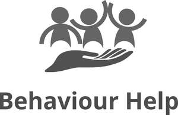

Trade Mark Journal No.2025/037 12 September 2025
UK00004257827 2 September 2025 (41,42,44)

International priority date claimed: 15 August 2025
(Australia)
(2577656)
International priority date claimed: 15 August 2025
(Australia)
(2577657)
International priority date claimed: 15 August 2025
(Australia)
(2577658)
- Class 41
- Education; providing of training; education services; providing online videos, not downloadable; arranging and conducting of training courses; arranging and conducting of training seminars and workshops; health and fitness training; health education; lifestyle counselling and consultancy [health and fitness training]; life coaching [training services]; physical health education; mentoring and coaching (education and training); educational advisory, assessment and consultancy services; educational services including but not limited to seminars, instruction, research; vocational training and guidance; arranging of exhibitions for training purposes; management of education, entertainment services and educational events; business training services; provision of education or entertainment services via online forums; education research services; arranging and conducting of training courses; arranging and conducting of training seminars and workshops; educational, entertainment, sporting and cultural activity centres; occupational health and safety services (education and training services); publication of multimedia material online; providing educational material; publication of educational, entertainment, or cultural materials; publication of scientific or medical documents, papers, and books; charitable services, namely mentoring (education and training); entertainment; on-line publication of journals or diaries [blog services]; podcast entertainment; sporting and cultural activities; providing information, advice and consultancy in relation to all the aforesaid services; including provision of all the aforesaid services online, via a website, the internet, global computer networks or other computer networks, by electronic means or wireless technology, or accessible by mobile phones or other Internet-enabled devices.
- Class 42
- Providing online non-downloadable computer software; providing online non-downloadable computer software for use in the fields of medical therapies, psychotherapies, behaviour therapy or education; online provision of web-based software and applications (non-downloadable); design and development of medical technology; scientific and medical research; hosting of databases; software as a service (SaaS); hosting of software as a service (SaaS); software as a service (SaaS) services featuring non-downloadable software; consulting services in the field of software as a service (SaaS); temporary use of online non-downloadable software; software application service provider; hosting computer software applications for others; hosting of web portals and client-server software interfaces allowing users to query a database for information; Platform as a Service (PaaS); design and development of software application solutions; computer software integration services; computer network services; development of computer platforms; maintenance of computer database software; data hosting services; data conversion of computer programs and data; electronic storage of data; temporary electronic storage of information and data; computer software services provided on an outsourcing basis; computerised business information storage; hosting online web facilities for others; web portal services (designing or hosting); computer services concerning electronic data storage; scientific and technological services and research and design relating thereto; providing information, advice and consultancy in relation to all the aforesaid services; including provision of all the aforesaid services online, via a website, the internet, global computer networks or other computer networks, by electronic means or wireless technology, or accessible by mobile phones or other Internet-enabled devices.
- Class 44
- Therapy services; behavioural analysis for medical purposes; behavioral analysis for medical purposes; behavioral modification information services; behavioural modification information services; cognitive behavioral therapy [CBT]; dialectical behavior therapy [DBT]; voice and speech therapy services; remedial therapy; psychotherapy; medical services; health assessment services and surveys; physical therapy; therapeutic treatment of the body; consultancy and advisory services in relation to therapy; emotional release therapy; psychological coaching, counseling and therapy; life counselling (psychological therapy), music and art therapy, occupational therapy, and counselling; meditation therapy services; personal care services (medical nursing, health, hygiene and beauty care); hygienic and beauty care for human beings or animals; health advisory services in relation to personal wellbeing, health, diet, nutrition, fitness, stress management, meditation and relaxation techniques, healthy eating, weight gain, weight loss, and weight control or maintenance, medical problems, medical services, diseases, herbal products, and pharmaceutical products; provision of information relating to mental health, nutrition and psychology; providing information, advice and consultancy in relation to all the aforesaid services; including provision of all the aforesaid services online, via a website, the internet, global computer networks or other computer networks, by electronic means or wireless technology, or accessible by mobile phones or other Internet-enabled devices.
BEHAVIOUR HELP PTY LTD
Representative: Trademark Tonic Limited